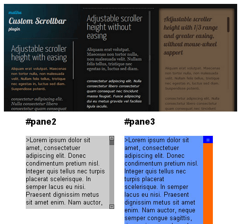

您现在的位置是：首页>博客>Nicescroll.js
简说js滚轮滑动篇之mCustomScrollbar
发布时间：2017-07-17编辑：坚果浏览（240）
如果你构建一个很有特色和创意的网页，那么肯定希望定义网页中的滚动条样式，这方面的 jQuery 插件比较不错的，有两个：jScrollPane 和 mCustomScrollbar。 关于 jScrollPane，大家见过的可能比较多，但是这个插件太过于古老而且功能不强大，效果在几年前非常不错，但是放在现在就不好说了。所以我选择了后者：mCustomScrollbar。
官网地址：http://manos.malihu.gr/jquery-custom-content-scroller/
参考地址：http://www.jq22.com/yanshi1818

本文就是介绍如何使用 mCustomScrollbar 这个插件，大部分的内容是翻译自 mCustomScrollbar 官方的介绍页面，但是根据自己的理解做了部分的调整和修改，同时增加一些自己在使用中的一些技巧。
关于 mCustomScrollbar
mCustomScrollbar 是个基于 jQuery UI 的自定义滚动条插件，它可以让你灵活的通过 CSS 定义网页的滚动条，并且垂直和水平两个方向的滚动条都可以定义，它通过 Brandon Aaron jquery mouse-wheel plugin 提供了鼠标滚动的支持，并且在滚动的过程中，还可以缓冲滚动使得滚动更加的平滑，还可以自动调整滚动条的位置和定义滚动到的位置等。总之，你知道非常好用就是了，:-)
mCustomScrollbar 这个插件的下载包里面包含了所有的插件文件和一些例子。其中以下的2个文件时必须要上传到服务器上：
jquery.mCustomScrollbar.js
jquery.mCustomScrollbar.css
关键字词：滚轮，自定义滚动条，